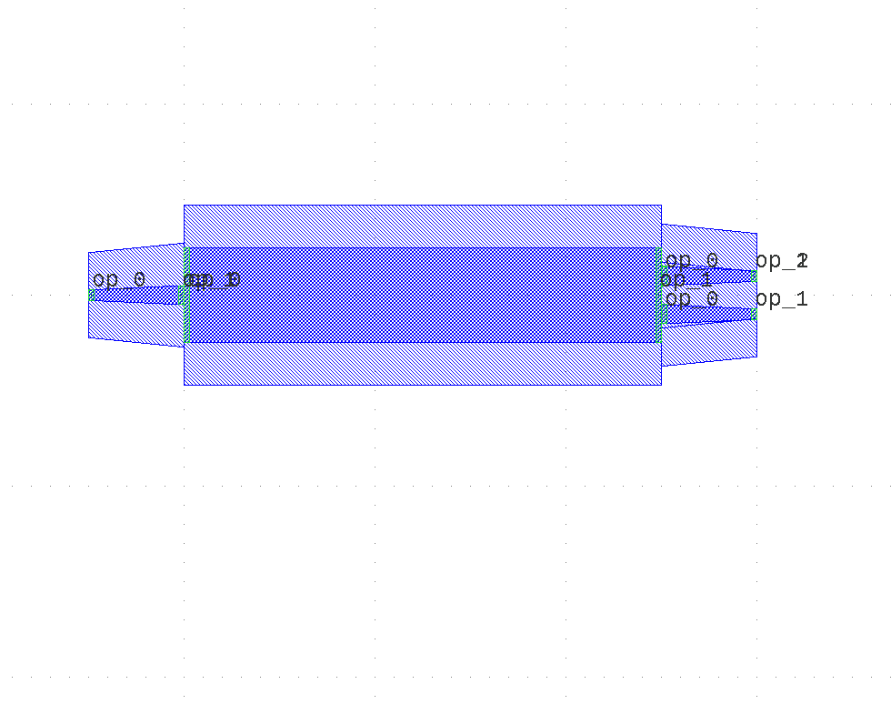

Module gpdk.components.mmi.mmi
Expand source code
from dataclasses import dataclass
from typing import Tuple
from fnpcell import all as fp
from gpdk.components.straight.straight import Straight
from gpdk.components.taper.taper_linear import TaperLinear
from gpdk.technology import get_technology
from gpdk.technology.interfaces import CoreCladdingWaveguideType
@fp.pcell_class()
@dataclass(eq=False)
class Mmi(fp.PCell):
"""
Attributes:
mid_wav_core_width: defaults to 5
wav_core_width: defaults to 1
n_inputs: defaults to 1
n_outputs: defaults to 2
length: defaults to 25
transition_length: defaults to 5
trace_spacing: defaults to 2
waveguide_type: type of waveguide
Examples:
```python
TECH = get_technology()
mmi = Mmi(waveguide_type=TECH.WG.FWG.C.WIRE)
fp.plot(mmi)
```

"""
mid_wav_core_width: float = fp.PositiveFloatParam(default=5).as_field()
wav_core_width: float = fp.PositiveFloatParam(default=1).as_field()
# end_core_width=fp.PositiveFloatParam(default=0.45).as_field()
n_inputs: int = fp.PositiveIntParam(default=1).as_field()
n_outputs: int = fp.PositiveIntParam(default=2).as_field()
length: float = fp.PositiveFloatParam(default=25).as_field()
transition_length: float = fp.PositiveFloatParam(default=5).as_field()
trace_spacing: float = fp.PositiveFloatParam(default=2).as_field()
waveguide_type: CoreCladdingWaveguideType = fp.WaveguideTypeParam(type=CoreCladdingWaveguideType).as_field()
def _default_waveguide_type(self):
return get_technology().WG.FWG.C.WIRE
def build(self) -> Tuple[fp.InstanceSet, fp.ElementSet, fp.PortSet]:
insts, elems, ports = super().build()
# fmt: off
mid_wav_core_width = self.mid_wav_core_width
wav_core_width=self.wav_core_width
n_inputs = self.n_inputs
n_outputs = self.n_outputs
length = self.length
transition_length = self.transition_length
trace_spacing = self.trace_spacing
waveguide_type = self.waveguide_type
center_force_cladding_width = mid_wav_core_width+waveguide_type.cladding_width
center_type = waveguide_type.updated(core_layout_width=mid_wav_core_width, cladding_layout_width=center_force_cladding_width)
center = Straight(length=length, waveguide_type=center_type, anchor=fp.Anchor.START)
insts += center
right_type = waveguide_type.updated(core_layout_width=wav_core_width, cladding_layout_width=waveguide_type.cladding_width + wav_core_width)
left_type = waveguide_type#.updated(core_layout_width=end_core_width, cladding_layout_width=waveguide_type.cladding_width + end_core_width)
taper_left = TaperLinear(length=transition_length, left_type=left_type, right_type=right_type, anchor=fp.Anchor.END)
taper_right = TaperLinear(length=transition_length, left_type=right_type, right_type=left_type, anchor=fp.Anchor.START)
base_in_y = - (n_inputs - 1) * trace_spacing / 2.0
for cnt in range(n_inputs):
taper_left_inst = taper_left.translated(0, base_in_y + cnt * trace_spacing)
insts += taper_left_inst
ports += taper_left_inst["op_0"].with_name(f"op_{n_inputs-cnt-1}")
base_out_y = - (n_outputs - 1) * trace_spacing / 2.0
for cnt in range(n_outputs):
taper_right_inst = taper_right.translated(length, base_out_y + cnt * trace_spacing)
insts += taper_right_inst
ports += taper_right_inst["op_1"].with_name(f"op_{cnt + n_inputs}")
# fmt: on
return insts, elems, ports
@fp.pcell_class()
@dataclass(eq=False)
class Mmi1x2(Mmi):
n_inputs: int = fp.PositiveIntParam(default=1, frozen=True).as_field()
n_outputs: int = fp.PositiveIntParam(default=2, frozen=True).as_field()
if __name__ == "__main__":
from pathlib import Path
gds_file = Path(__file__).parent / "local" / Path(__file__).with_suffix(".gds").name
library = fp.Library()
TECH = get_technology()
# =======================================================================
# fmt: off
library += Mmi()
library += Mmi1x2()
# fmt: on
# =============================================================
fp.export_gds(library, file=gds_file)
# fp.plot(library)Classes
class Mmi (name: str = None, bands: Optional[FrozenSet[fnpcell.interfaces.IBand]] = None, patches: Tuple[fnpcell.interfaces.IElement, ...] = (), port_names: Sequence[Union[None, str, fnpcell.interfaces.Hidden]] = (), transform: fnpcell.transform.Affine2D = None, mid_wav_core_width: float = 5, wav_core_width: float = 1, n_inputs: int = 1, n_outputs: int = 2, length: float = 25, transition_length: float = 5, trace_spacing: float = 2, waveguide_type: CoreCladdingWaveguideType = None)-
Attributes
mid_wav_core_width- defaults to 5
wav_core_width- defaults to 1
n_inputs- defaults to 1
n_outputs- defaults to 2
length- defaults to 25
transition_length- defaults to 5
trace_spacing- defaults to 2
waveguide_type- type of waveguide
Examples:
TECH = get_technology() mmi = Mmi(waveguide_type=TECH.WG.FWG.C.WIRE) fp.plot(mmi)
Expand source code
class Mmi(fp.PCell): """ Attributes: mid_wav_core_width: defaults to 5 wav_core_width: defaults to 1 n_inputs: defaults to 1 n_outputs: defaults to 2 length: defaults to 25 transition_length: defaults to 5 trace_spacing: defaults to 2 waveguide_type: type of waveguide Examples: ```python TECH = get_technology() mmi = Mmi(waveguide_type=TECH.WG.FWG.C.WIRE) fp.plot(mmi) ```  """ mid_wav_core_width: float = fp.PositiveFloatParam(default=5).as_field() wav_core_width: float = fp.PositiveFloatParam(default=1).as_field() # end_core_width=fp.PositiveFloatParam(default=0.45).as_field() n_inputs: int = fp.PositiveIntParam(default=1).as_field() n_outputs: int = fp.PositiveIntParam(default=2).as_field() length: float = fp.PositiveFloatParam(default=25).as_field() transition_length: float = fp.PositiveFloatParam(default=5).as_field() trace_spacing: float = fp.PositiveFloatParam(default=2).as_field() waveguide_type: CoreCladdingWaveguideType = fp.WaveguideTypeParam(type=CoreCladdingWaveguideType).as_field() def _default_waveguide_type(self): return get_technology().WG.FWG.C.WIRE def build(self) -> Tuple[fp.InstanceSet, fp.ElementSet, fp.PortSet]: insts, elems, ports = super().build() # fmt: off mid_wav_core_width = self.mid_wav_core_width wav_core_width=self.wav_core_width n_inputs = self.n_inputs n_outputs = self.n_outputs length = self.length transition_length = self.transition_length trace_spacing = self.trace_spacing waveguide_type = self.waveguide_type center_force_cladding_width = mid_wav_core_width+waveguide_type.cladding_width center_type = waveguide_type.updated(core_layout_width=mid_wav_core_width, cladding_layout_width=center_force_cladding_width) center = Straight(length=length, waveguide_type=center_type, anchor=fp.Anchor.START) insts += center right_type = waveguide_type.updated(core_layout_width=wav_core_width, cladding_layout_width=waveguide_type.cladding_width + wav_core_width) left_type = waveguide_type#.updated(core_layout_width=end_core_width, cladding_layout_width=waveguide_type.cladding_width + end_core_width) taper_left = TaperLinear(length=transition_length, left_type=left_type, right_type=right_type, anchor=fp.Anchor.END) taper_right = TaperLinear(length=transition_length, left_type=right_type, right_type=left_type, anchor=fp.Anchor.START) base_in_y = - (n_inputs - 1) * trace_spacing / 2.0 for cnt in range(n_inputs): taper_left_inst = taper_left.translated(0, base_in_y + cnt * trace_spacing) insts += taper_left_inst ports += taper_left_inst["op_0"].with_name(f"op_{n_inputs-cnt-1}") base_out_y = - (n_outputs - 1) * trace_spacing / 2.0 for cnt in range(n_outputs): taper_right_inst = taper_right.translated(length, base_out_y + cnt * trace_spacing) insts += taper_right_inst ports += taper_right_inst["op_1"].with_name(f"op_{cnt + n_inputs}") # fmt: on return insts, elems, portsAncestors
- fnpcell.pdk.pcell.PCell
- fnpcell.cell.cell_ref.CellRef
- fnpcell.mixin.transform_mixin.TransformMixin
- fnpcell.interfaces.ICellRef
- fnpcell.interfaces.IUpdatable
- fnpcell.interfaces.IElement
- fnpcell.interfaces.IRunnable
- fnpcell.interfaces.IAffineTransformable
Subclasses
Class variables
var length :Â floatvar mid_wav_core_width :Â floatvar n_inputs :Â intvar n_outputs :Â intvar trace_spacing :Â floatvar transition_length :Â floatvar wav_core_width :Â floatvar waveguide_type :Â CoreCladdingWaveguideType
Methods
def build(self) ‑> Tuple[fnpcell.pdk.collection.InstanceSet, fnpcell.pdk.collection.ElementSet, fnpcell.pdk.collection.PortSet]-
Abstract method must be implemented to build a pcell.
Expand source code
def build(self) -> Tuple[fp.InstanceSet, fp.ElementSet, fp.PortSet]: insts, elems, ports = super().build() # fmt: off mid_wav_core_width = self.mid_wav_core_width wav_core_width=self.wav_core_width n_inputs = self.n_inputs n_outputs = self.n_outputs length = self.length transition_length = self.transition_length trace_spacing = self.trace_spacing waveguide_type = self.waveguide_type center_force_cladding_width = mid_wav_core_width+waveguide_type.cladding_width center_type = waveguide_type.updated(core_layout_width=mid_wav_core_width, cladding_layout_width=center_force_cladding_width) center = Straight(length=length, waveguide_type=center_type, anchor=fp.Anchor.START) insts += center right_type = waveguide_type.updated(core_layout_width=wav_core_width, cladding_layout_width=waveguide_type.cladding_width + wav_core_width) left_type = waveguide_type#.updated(core_layout_width=end_core_width, cladding_layout_width=waveguide_type.cladding_width + end_core_width) taper_left = TaperLinear(length=transition_length, left_type=left_type, right_type=right_type, anchor=fp.Anchor.END) taper_right = TaperLinear(length=transition_length, left_type=right_type, right_type=left_type, anchor=fp.Anchor.START) base_in_y = - (n_inputs - 1) * trace_spacing / 2.0 for cnt in range(n_inputs): taper_left_inst = taper_left.translated(0, base_in_y + cnt * trace_spacing) insts += taper_left_inst ports += taper_left_inst["op_0"].with_name(f"op_{n_inputs-cnt-1}") base_out_y = - (n_outputs - 1) * trace_spacing / 2.0 for cnt in range(n_outputs): taper_right_inst = taper_right.translated(length, base_out_y + cnt * trace_spacing) insts += taper_right_inst ports += taper_right_inst["op_1"].with_name(f"op_{cnt + n_inputs}") # fmt: on return insts, elems, ports
class Mmi1x2 (name: str = None, bands: Optional[FrozenSet[fnpcell.interfaces.IBand]] = None, patches: Tuple[fnpcell.interfaces.IElement, ...] = (), port_names: Sequence[Union[None, str, fnpcell.interfaces.Hidden]] = (), transform: fnpcell.transform.Affine2D = None, mid_wav_core_width: float = 5, wav_core_width: float = 1, n_inputs: int = 1, n_outputs: int = 2, length: float = 25, transition_length: float = 5, trace_spacing: float = 2, waveguide_type: CoreCladdingWaveguideType = None)-
Mmi1x2(args: Any, *kwargs: Any)
Expand source code
class Mmi1x2(Mmi): n_inputs: int = fp.PositiveIntParam(default=1, frozen=True).as_field() n_outputs: int = fp.PositiveIntParam(default=2, frozen=True).as_field()Ancestors
- Mmi
- fnpcell.pdk.pcell.PCell
- fnpcell.cell.cell_ref.CellRef
- fnpcell.mixin.transform_mixin.TransformMixin
- fnpcell.interfaces.ICellRef
- fnpcell.interfaces.IUpdatable
- fnpcell.interfaces.IElement
- fnpcell.interfaces.IRunnable
- fnpcell.interfaces.IAffineTransformable
Class variables
var n_inputs :Â intvar n_outputs :Â int
Methods